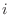
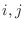

Next: Alignment.align2d() align Up: The Alignment class: comparison Previous: Alignment.compare_sequences() compare Contents Index
IMPORTANT NOTE: This command is obsolete, and is no longer maintained. It is strongly recommended that you use Alignment.salign() instead.
This command aligns two blocks of sequences.
The two blocks of sequences to be aligned are sequences 1 to align_block and align_block+1 to the last sequence. The sequences within the two blocks should already be aligned; their alignment does not change.
The command can do either the global (similar to [Needleman & Wunsch, 1970]; local_alignment = False) or local dynamic programming alignment (similar to [Smith & Waterman, 1981]; local_alignment = True).
For the global alignment, set overhang length overhang to more than 0 so that the corresponding number of residues at either of the four termini won't be penalized by any gap penalties (this makes it a pseudo local alignment).
To speed up the calculation, set off_diagonal to a number smaller than the shortest sequence length. The alignments matching residues  andwith are not considered at all in the search for the best alignment.
The gap initiation and extension penalties are specified by gap_penalties_1d. The default values of -900 -50 for the 'as1.sim.mat' similarity matrix were found to be optimal for pairwise alignments of sequences that share from 30% to 45% sequence identity (RS and AŠ, in preparation).
The residue type - residue type scores are read from file rr_file. The routine automatically determines whether it has to maximize similarity or minimize distance.
matrix_offset applies to local alignment only and influences its length. matrix_offset should be somewhere between the lowest and highest residue-residue scores. A smaller value of this parameter will make the local alignments shorter when distance is minimized, and longer when similarity is maximized. This works as follows: The recursively constructed dynamic programming comparison matrix is reset to 0 at position  when the current alignment score becomes larger (distance) or smaller (similarity) than matrix_offset. Note that this is equivalent to the usual shifting of the residue-residue scoring matrix in the sense that there are two combinations of gap_penalties_1d and matrix_offset values that will give exactly the same alignments irrespective of whether the matrix is actually offset (with 0 used to restart local alignments in dynamic programming) or the matrix is not offset but matrix_offset is used as the cutoff for restarting local alignments in dynamic programming. For the same reason, the matrix offset does not have any effect on the global alignments if the gap extension penalty is also shifted for half of the matrix offset.
The position-position score is an average residue-residue score for all possible pairwise comparisons between the two blocks ( comparisons are done, whereand are the number of sequences in the two blocks, respectively). The first exception to this is when align_what is set to 'ALIGNMENT', in which case the two alignments defined by align_block are aligned; i.e., the score is obtained by comparing only equivalent positions between the two alignment blocks (only
Only the 20 standard residue types, plus Asx (changes to Asn) and Glx (changes to Gln) are recognized. Every other unrecognized residue, except for a gap and a chain break, changes to Gly for comparison purposes.
When aligning two sequences containing multiple chains (i.e., with align_what set to 'BLOCK' and align_block set to 1), this command will attempt to ensure that the chain breaks are aligned with each other (so that residues from one chain will not align with residues from another). This is done by adding a bonus score to positions in the dynamic programming matrix that correspond to aligning two chain breaks. This score can be adjusted by setting the break_break_bonus parameter, or the behavior can be disabled by setting it to zero. For other kinds of alignments, chain breaks are ignored.
# Example for: Alignment.align() # This will read two sequences, align them, and write the alignment # to a file: from modeller import * log.verbose() env = Environ() aln = Alignment(env) aln.append(file='toxin.ali', align_codes=('1fas', '2ctx')) # The as1.sim.mat similarity matrix is used by default: aln.align(gap_penalties_1d=(-600, -400)) aln.write(file='toxin-seq.ali')